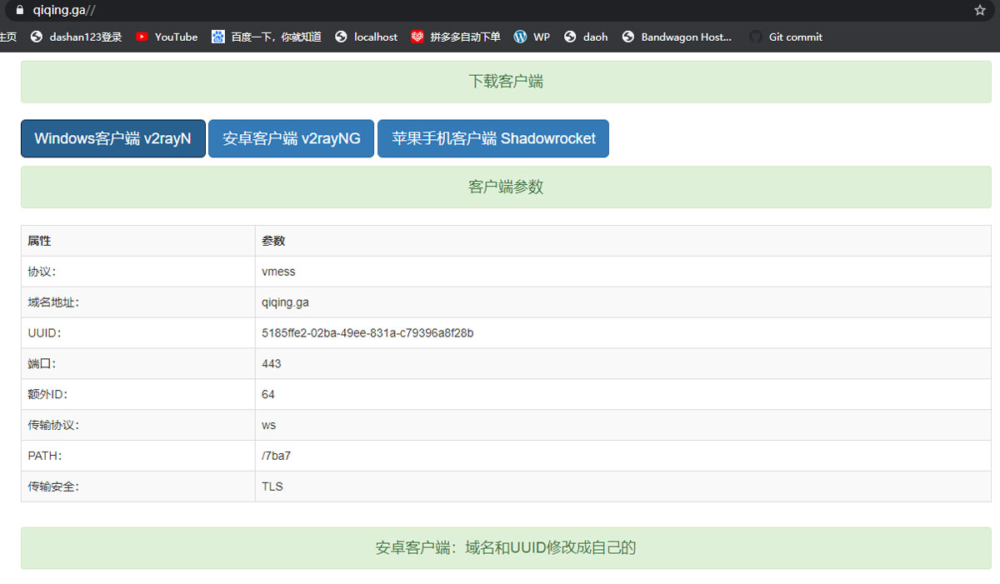

VPS推荐： 帮瓦工 Vultr CloudCone | 免费域名：https://freenom.com 收费：https://namesilo.com
1. 用ssh链接自己的VPS，自动安装V2Ray Nginx+WS+TLS
bash <(curl -L https://raw.githubusercontent.com/yuukuun/v2fly/main/v2fly.sh)2. 输入域名
请输入自己的域名 : qiqing.ga3. 安装成功
● nginx.service - nginx
Loaded: loaded (/etc/systemd/system/nginx.service; enabled; vendor preset: disabled)
Active: active (running) since Sun 2020-10-18 01:40:36 UTC; 495ms ago
Main PID: 18170 (nginx)
Tasks: 2 (limit: 5048)
Memory: 1.9M
CGroup: /system.slice/nginx.service
├─18170 nginx: master process /usr/local/nginx/sbin/nginx
└─18172 nginx: worker process
● v2ray.service - V2Ray Service
Loaded: loaded (/etc/systemd/system/v2ray.service; enabled; vendor preset: disabled)
Drop-In: /etc/systemd/system/v2ray.service.d
└─10-donot_touch_single_conf.conf
Active: active (running) since Sun 2020-10-18 01:40:36 UTC; 276ms ago
Docs: https://www.v2fly.org/
Main PID: 18193 (v2ray)
Tasks: 6 (limit: 5048)
Memory: 9.9M
4. 把刚才输入的域名用浏览器打开，就可以看到v2ray客户端和参数。(1)电脑端参数配置好直接下载就能用。(2)Android客户端安装后手动暑输入参数。(3)苹果IOS客户端需要美国区的帐号下载安装和参数配置。(如果客户端连接出错，把服务器和客户端时间同步的！)

bash <(curl -L https://raw.githubusercontent.com/v2fly/fhs-install-v2ray/master/install-release.sh)621b99bc-1230-4f20-8438-04ff5f1edd8f
#!/bin/bash
cat >/usr/local/etc/v2ray/config.json<<-EOF
{
"log" : {
"access": "/var/log/v2ray/access.log",
"error": "/var/log/v2ray/error.log",
"loglevel": "warning"
},
"inbound": {
"port": 11234,
"listen":"127.0.0.1",
"protocol": "vmess",
"settings": {
"clients": [
{
"id": "621b99bc-1230-4f20-8438-04ff5f1edd8f",
"level": 1,
"alterId": 64,
"email": "akcp1234@gmail.com"
}
]
},
"streamSettings": {
"network": "ws",
"wsSettings": {
"path": "/7ba7"
}
}
},
"outbound": {
"protocol": "freedom",
"settings": {}
}
}
EOF
systemctl start v2ray.service
systemctl enable v2ray.service
systemctl status v2ray.service
#!/bin/bash
cat >/usr/local/etc/v2ray/config.json<<-EOF
{
"inbounds": [
{
"port": 1080,
"listen": "127.0.0.1",
"protocol": "socks",
"sniffing": {
"enabled": true,
"destOverride": ["http", "tls"]
},
"settings": {
"auth": "noauth",
"udp": false
}
}
],
"outbounds": [
{
"protocol": "vmess",
"settings": {
"vnext": [
{
"address": "baidu.com",
"port": 12345,
"users": [
{
"id": "362a1354-21dd-4799-bfe1-c6ecc8e4dd0",
"alterId": 64
}
]
}
]
},
"streamSettings": {
"network": "ws",
"security": "tls",
"wsSettings": {
"path": "/7ba7"
}
}
}
]
}
EOF
systemctl start v2ray.service
systemctl enable v2ray.service
systemctl status v2ray.service
cat >guiNConfig.json<<-EOP
{
"inbound": [
{
"localPort": 10808,
"protocol": "socks",
"udpEnabled": true,
"sniffingEnabled": true
}
],
"logEnabled": false,
"loglevel": "warning",
"index": 0,
"vmess": [
{
"configVersion": 2,
"address": "baidu.com",
"port": 443,
"id": "362a1354-21dd-4799-bfe1-c6ecc8e4dd0",
"alterId": 64,
"security": "auto",
"network": "ws",
"remarks": "",
"headerType": "none",
"requestHost": "",
"path": "/7ba7",
"streamSecurity": "tls",
"allowInsecure": "",
"configType": 1,
"testResult": "",
"subid": ""
}
],
"muxEnabled": true,
"domainStrategy": "IPIfNonMatch",
"routingMode": "0",
"useragent": [],
"userdirect": [],
"userblock": [],
"kcpItem": {
"mtu": 1350,
"tti": 50,
"uplinkCapacity": 12,
"downlinkCapacity": 100,
"congestion": false,
"readBufferSize": 2,
"writeBufferSize": 2
},
"listenerType": 2,
"speedTestUrl": "http://speedtest-sgp1.digitalocean.com/10mb.test",
"speedPingTestUrl": "https://www.google.com/generate_204",
"urlGFWList": "https://raw.githubusercontent.com/gfwlist/gfwlist/master/gfwlist.txt",
"allowLANConn": false,
"enableStatistics": false,
"keepOlderDedupl": false,
"statisticsFreshRate": 2000,
"remoteDNS": null,
"defAllowInsecure": false,
"subItem": [],
"uiItem": {
"mainSize": "968, 632",
"mainLvColWidth": {
"def": 30,
"configType": 80,
"remarks": 100,
"address": 120,
"port": 50,
"security": 90,
"network": 70,
"subRemarks": 50,
"testResult": 70
}
},
"userPacRule": []
}
EOP